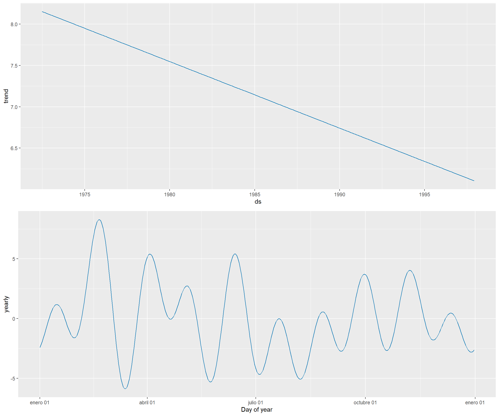
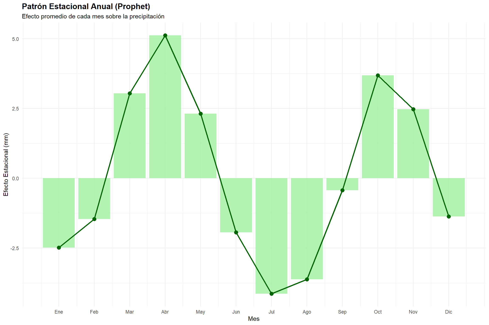
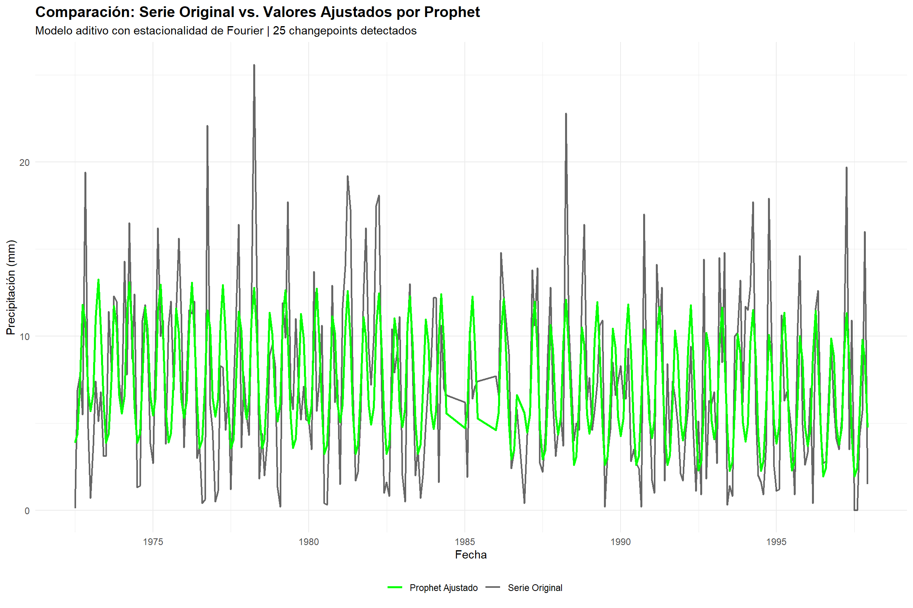

7 Enfoque de Regresión: Facebook Prophet
Facebook Prophet representa un enfoque alternativo para el pronóstico de series temporales, basándose en modelos aditivos generalizados (GAM) en lugar de procesos estocásticos. Este paradigma permite interpretar las series temporales desde una perspectiva de regresión, donde los componentes (tendencia, estacionalidad, eventos) se modelan como variables predictoras independientes.
Nota: Los datos y el modelo Prophet fueron preparados en el Capítulo 3. Los objetos prophet_model, prophet_forecast, prophet_insample, prophet_train y prophet_test_df están disponibles directamente.
7.1 Series Temporales como Regresión
7.1.1 Paradigma Tradicional vs. Enfoque Regresivo
Modelos estocásticos (ARIMA, Holt-Winters): - Asumen que cada observación depende de observaciones pasadas - Modelan la autocorrelación como propiedad fundamental - Requieren datos consecutivos sin valores faltantes - Dificultan la incorporación de variables externas
Enfoque de regresión (Prophet): - Descompone la serie en componentes interpretables - Cada componente se modela como función del tiempo - Permite datos irregulares y valores faltantes - Facilita la inclusión de variables exógenas (regresores)
7.2 Resumen del Modelo Ajustado
## === MODELO PROPHET ===## Partición de datos:## Entrenamiento: 1972-07 a 1997-12 | n = 290## Prueba: 1998-01 a 1998-12 | n = 12## Configuración del modelo:## Modo de estacionalidad: additive## Estacionalidad anual: Activada (Fourier)## Changepoint prior scale: 0.05## Seasonality prior scale: 10## Changepoints detectados: 25## Métricas de pronóstico (1998):## MAE: 4.171 mm## RMSE: 4.81 mm## MAPE: 353.11 %## Cobertura IC: 91.7 %7.3 Extracción y Visualización de Componentes


##
## === INTERPRETACIÓN DEL PATRÓN ESTACIONAL ===## El patrón bimodal se confirma:## • Pico primario: Apr## • Efecto máximo: 5.11 mm## Meses con efecto negativo (temporada seca):## # A tibble: 7 × 2
## Mes Efecto_Estacional
## <dbl> <dbl>
## 1 1 -2.49
## 2 2 -1.46
## 3 6 -1.94
## 4 7 -4.14
## 5 8 -3.62
## 6 9 -0.435
## 7 12 -1.387.4 Análisis Comparativo: Serie Original vs. Valores Ajustados

##
## === CALIDAD DEL AJUSTE (IN-SAMPLE) ===## Correlación (r): 0.6184## R² (coef. determinación): 0.3824## → El modelo explica el 38.24 % de la varianza## MSE (Error Cuadrático Medio): 14.815 mm²## RMSE (Raíz del MSE): 3.849 mm## Interpretación:## • Las discrepancias entre valores originales y ajustados representan## el componente irregular (residuos) que Prophet no captura.## • Un buen ajuste implica que estos residuos sean ruido blanco.## • Prophet descompone la serie en tendencia + estacionalidad + residuos,## siguiendo el paradigma de regresión GAM.
7.6 Evaluación del Desempeño
## === MÉTRICAS DE DESEMPEÑO DEL PRONÓSTICO PROPHET ===## Error Absoluto Medio (MAE): 4.171 mm## Raíz del Error Cuadrático Medio (RMSE): 4.81 mm## Error Porcentual Absoluto Medio (MAPE): 353.11 %## Cobertura del intervalo de confianza (95%): 100 %## Observaciones dentro del IC: 12 de 12## Test de Shapiro-Wilk (normalidad de errores):## Estadístico W: 0.935## P-valor: 0.4358## Conclusión: Los errores siguen distribución normal (p > 0.05)##
## === ESTADÍSTICAS DE ERRORES ===## Media de errores: 1.7782 mm## (Sesgo: valor cercano a 0 indica predicciones no sesgadas)## Desviación estándar: 4.668 mm## Error mínimo: -6.431 mm## Error máximo: 7.552 mm